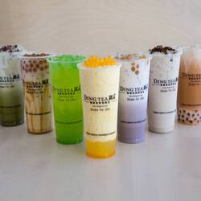

Vivian Le
Hello! My name is Vivian Le and I am currently a first-year undergraduate student at the University of Riverside. As if right now, I am under the Undeclared program as my major, however I plan on switching from the Undeclared program over to Psychology. I am currently a member of the Vietnamese Student Association on campus. I aspire to be a Psychologist working in elementary, intermediate, or high schools. I have a strong passion for helping others and I enjoy working with kids and toddlers, therefore I strongly believe that a job as a professional educational psychologist will be a suitable job for me.
Some of my hobbies outside of school are ice skating, trying new foods, learning about cars, exploring the city, and spending quality time with family and friends. One thing I enjoy about UCR is the campus; the campus itself is very diverse and there is always an opportunity to meet new people and form new friendships. Aside from school, my work life consists of making boba drinks and hanging out with my coworkers. My job is very flexible with my school schedule; therefore I am able to balance both school life and work life. My weekends consists of driving an hour back home to Orange County, where I am able to spend time with my family, friends, and former coworkers. I have only had one job, however when I was about 15 years old, I would help out at my aunt's clothing business as a summer job. Once I turned 16, I applied to a boba shop, where I am currently working at the moment. Going back to my educational life, some of the courses I am taking right now are Computer Science 8, Religious Myths and Rituals, English 004, and a CHASS first-year workshop. Next quarter, I plan on taking a math course suitable for my major, another english course, as well as two breadth courses. I am in the process of pursuing my Bachelors of Arts in Psychology and hopefully landing an internship before graduating from college so that I am able to experience what being a psychologist is really like.
Apart from my educational life, some recent activities that I am proud of is being able to buy my own car and living on my own. At 17 years old, I have learned how to take care of myself and live independently. After being quarantined for two years due to the pandemic, I missed out on my senior year of high school. My senior year was held mainly online, with the exception of going onto campus to take tests. Looking back, it was a crazy leap from the middle of junior year to freshman year of college. Despite the unfortunate circumstances, I am grateful of where I am today and I would not trade it for anything. Being accepted to a university was a big goal of mine in high school and I am proud of myself and grateful for my parents for endless support and am truly humbled.
Experience
Social Chair
• Elected as Co-Social Chair for 2020-2021 term
• volunteer and spread cancer awareness in community
Cashier
• Responsible for checking out customers
• Make change accurately and efficiently
• Tagged garmets and organized them accordingly
VSA Club Member
• Be engaged with the Vietnamese community
• Learn about Vietnamese culture
• Celebrate traditional Vietnamese holidays
Education
UC Riverside
Portfolio
